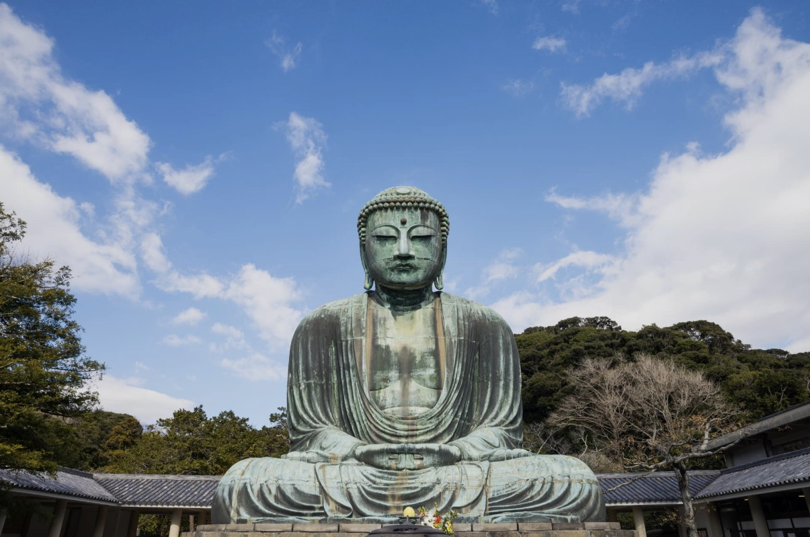

위치 / 접근
가마쿠라시 하세 지역에 위치한 고토쿠인(高徳院)은 에노덴 ‘하세역’에서 도보 약 7분 거리. 가마쿠라역에서 에노덴 열차로 두 정거장이며, 하세데라와도 가까워 함께 방문하기 좋다. 주변에는 기념품점과 찻집이 줄지어 있어 산책하기에도 적합하다.
운영 / 요금 / 시즌 정보
- 개방 시간: 8:00~17:00 (10~3월은 16:30까지)
- 입장료: 어른 300엔 / 어린이 150엔
- 대불 내부 견학: 별도 요금 50엔
- 연중무휴 (기상 악화 시 임시 휴관 가능)
무엇을 볼 수 있나 / 체험
높이 약 13.35m, 무게 약 121톤의 청동 불상으로 일본 3대 대불 중 하나다. 원래는 사찰 본당 안에 있었지만, 15세기 쓰나미로 건물이 유실된 후 현재처럼 야외에 남았다. 내부 견학이 가능해 청동 구조의 세밀함을 가까이서 볼 수 있으며, 방문객들은 합장하며 평온을 기원하는 사진 명소로도 즐겨 찾는다.
먹거리 / 주변 시설
입구 주변에는 마차 소프트 아이스크림, 단고, 크로켓 등 간식거리가 다양하며 도보 5분 거리의 하세데라 사찰과 함께 둘러보는 코스가 가장 인기 있다. 대불 입구 앞의 전통 찻집에서는 일본식 말차 세트를 즐길 수 있다.
추천 일정 & 여행 스타일
- 오전: 가마쿠라역 출발 → 하세역 하차 → 하세데라 → 대불 참배
- 오후: 에노시마 전철 타고 해변 산책 또는 카페 휴식
- 여행 스타일: 역사·불교 유적 탐방, 가족·커플 여행, 사진 여행 모두 적합
문화 / 역사 / 배경
1252년에 제작된 청동불상으로, 조동종(曹洞宗)의 불교 사상을 대표한다. 가마쿠라 막부 시대의 예술·기술 수준을 상징하는 문화재로 지정되어 있으며, 일본 국보 제1호로도 알려져 있다. 천 년 가까이 자리를 지키며 일본 불교의 ‘평온’과 ‘영원성’을 상징한다.
⚠ 여행 팁
- 관광객이 가장 많은 시간대는 11~15시. 아침 일찍 방문하면 한적한 분위기 가능
- 햇빛이 강한 날엔 모자나 양산 준비 (그늘 적음)
- 대불 내부는 여름철 다소 더울 수 있음
- 하세역 근처 ‘기념품 골목’은 마감이 빠르므로 17시 이전 방문 추천
공식·관광 정보
https://www.kotoku-in.jp/ (고토쿠인 공식 사이트, 일본어·영어 지원)